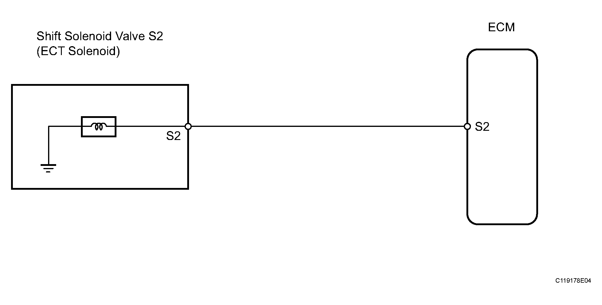

Home
>>
Scion
>>
2006
>>
xB Standard
>>
Repair and Diagnosis
>>
External Pages
>>
Different variant/trim
>>
Section 1 (U340E Automatic Transaxle)
>>
Automatic Transaxle System
>>
DTC P0976 Shift Solenoid "B" Control Circuit Low (Shift Solenoid Valve S2); DTC P0977 Shift Solenoid "B" Control Circuit High (Shift Solenoid Valve S2)
>>
Wiring Diagram
DTC P0976 Shift Solenoid "B" Control Circuit Low (Shift Solenoid Valve S2); DTC P0977 Shift Solenoid "B" Control Circuit High (Shift Solenoid Valve S2): Wiring Diagram
WARNING:
This page is about a different variant/trim than selected.
Fig 1: Shift Solenoid Valve S2 - Wiring Diagram

Courtesy of © TOYOTA, LICENSE AGREEMENT TMS1002